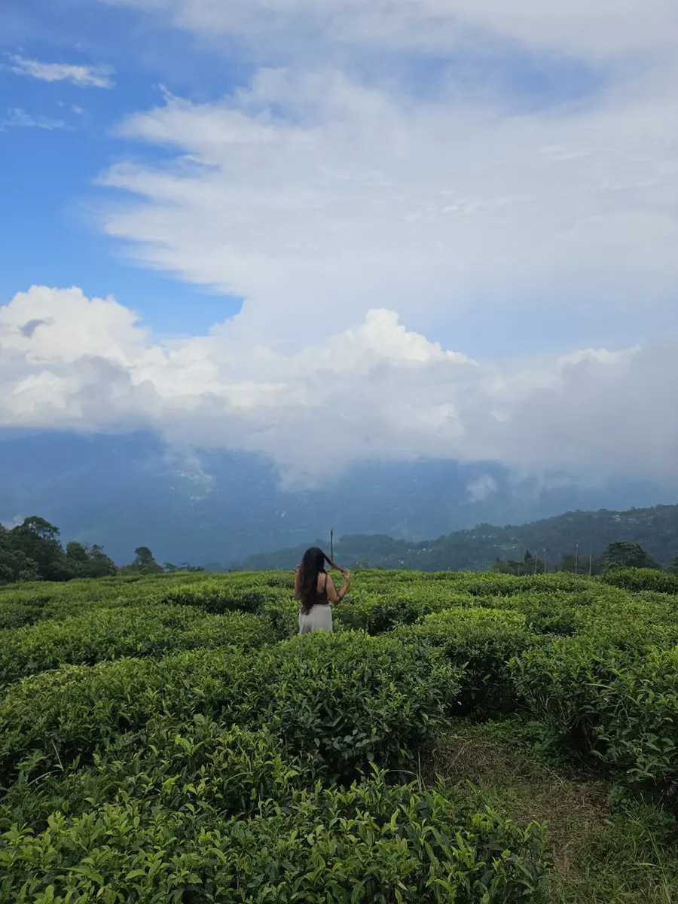

About
I built the right life. It just wasn't mine.
I'm Deepshikha. I help people who are good at a job they don't love remember who they came here to be, and actually live it.
The short version
I grew up in a middle-class home where money was tight and my dad worked Monday to Saturday, barely taking a leave until he retired. Work was serious. Money wasn't something to mess around with.
So I did it right. MBA. Customer support. Promoted every year, one of the strongest in my team, a six-figure salary. And I hated needing permission to live my life. Leave approvals. A vacation I had to ask for.
For three or four years I told myself I just needed a remote job. I tried web design, Airbnb co-hosting, everything on the side. All of it died out, and I blamed time.
Then one day, travelling, I read a message about possible layoffs. I wasn't even scared. It just clicked: something I don't even want could be taken away from me anyway. Nothing is guaranteed.
Meditation brought me back to myself. Then Vipassana: ten days of silence. Halfway through, I knew. I quit soon after, with no plan, no next job, no backup.
and then: "fuck yes, I want to be a coach."

Why "to see as it is"
I won't hype you out of the fear. I'll help you look at it.
Vipassana means seeing things as they are. That's the whole work. You look at the fear, in your body, until it loses its grip. Then we do a ritual so your body remembers, not just your head.
I still have fears. I still have bad days. I'm not Buddha. The difference is they don't stop me anymore.
I believe in God and magic, and I want to know the science behind everything. So you get both.
What I'm here for